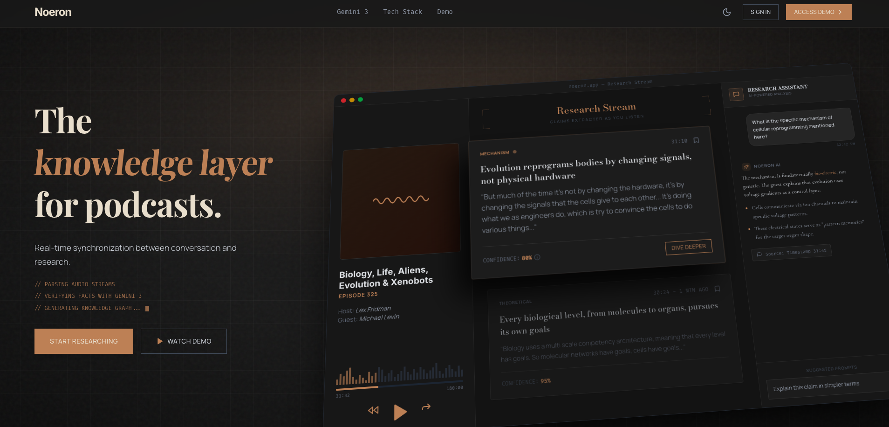

Noeron
An AI research companion that bridges science podcasts and the academic literature in real time.
- Role
- Solo (design, backend, frontend)
- Timeline
- Gemini 3 Global Hackathon · 2026
- Built with
- Gemini 3 · Python · Next.js · Supabase
Why it exists
I listen to a lot of podcasts and often wonder whether or not a guest is accurately portraying the scientific literature on a given topic. I also want to read the literature myself for a better understanding. This project gave me the opportunity to see if I could level up my podcast consumption experience. I didn't go as far as being able to identify inaccuracy, but I did build a tool that surfaces the research being referenced in conversation. As the podcast episode plays, Gemini identifies when a guest makes a claim, then validates that claim. To keep it simple for this project, I chose to focus on one of favorite scientists, Michael Levin, but this could be done for other scientists as well!
How it works
Noeron is a real-time pipeline from audio to evidence. A podcast is transcribed and speaker-diarized with AssemblyAI, then split into overlapping ~60-second windows. Gemini 3 runs two passes over each window: first detecting the scientific claims and tagging them (organism, mechanism), then generating targeted research queries from those claims.
Each query hits a retrieval index built from 150+ bioelectricity papers: parsed from PDF with GROBID, chunked with tiktoken, embedded with Gemini embeddings, and stored in Supabase pgvector. Gemini 3 synthesizes the retrieved passages into a context card: a scannable summary with citations and a confidence score, surfaced at the exact timestamp the claim was made.

A few decisions did the heavy lifting:
- Two-pass claim detection. Detecting claims first and retrieving second keeps the model grounded and citation-backed instead of free-associating.
- Context caching was the economic unlock. Caching the 150-paper corpus once and querying it thousands of times cut cost roughly 25× (~$50 → ~$2 per 1,000 queries) and made real-time responses during playback viable at all.
- Provenance everywhere. Every card links back to its source sections with a confidence level, so a summary can always be traced to the paper behind it.
Demo
Tech stack
- Gemini 3 Pro / Flash
- Gemini embeddings
- Python
- FastMCP + FastAPI
- Next.js
- Supabase pgvector
- ChromaDB
- AssemblyAI
- GROBID
- tiktoken
- Imagen
- Gemini 2.5 TTS
- Railway · Vercel
What I learned
- Infrastructure constraints, not model quality, often decide whether an AI product is viable: context caching is the only reason this one works economically.
- Grounding is a pipeline problem, not a prompt. Reliable citations came from the two-pass structure and provenance tracking, not from asking the model nicely.
- Framing the product as infrastructure (one synthesis serving many) clarified nearly every design decision that followed.